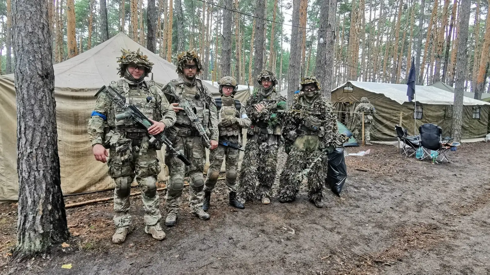

01 / Контакт
Коротко
расскажи о себе
Имя, возраст, опыт, что уже есть из снаряжения и как удобнее связаться. Этого достаточно, чтобы начать разговор без длинной анкеты.
Подготовить обращение →Не нужно сначала собирать «идеальный» комплект, а потом искать, с кем играть. Нормальный порядок обратный: познакомиться, понять формат, уточнить требования и только после этого докупать то, что действительно понадобится.
Маршрут ниже ведёт от первого сообщения до первого совместного выезда.Имя, возраст, опыт, что уже есть из снаряжения и как удобнее связаться. Этого достаточно, чтобы начать разговор без длинной анкеты.
Подготовить обращение →
Место, формат, длительность, обязательная защита и то, что можно не покупать к первому разу. Так ты не собираешь комплект по случайным фотографиям.
Как устроен комплект →
Погода, обувь, вода, питание, дорога и рабочая защита важнее декоративных покупок. Всё, что уже есть, лучше проверить заранее.

На месте быстрее становится понятно, как работает группа, какой темп тебе подходит и что в собственном комплекте действительно нужно изменить.
Где встречаемся, во сколько приезжать и сколько примерно длится выезд.
Температура, осадки и состояние грунта — от этого зависит одежда и запас сухих вещей.
Защитные очки — базовый элемент безопасности. Конкретные требования уточняются до мероприятия.
Запас под сезон, длительность и нагрузку, а не «как-нибудь разберёмся на месте».
Не скрывай текущий комплект и не пытайся выглядеть опытнее. Конкретные вещи проще обсудить до покупки новых.

Форма соберёт короткое сообщение. Ты проверишь текст, скопируешь его и сам отправишь команде через ВКонтакте.